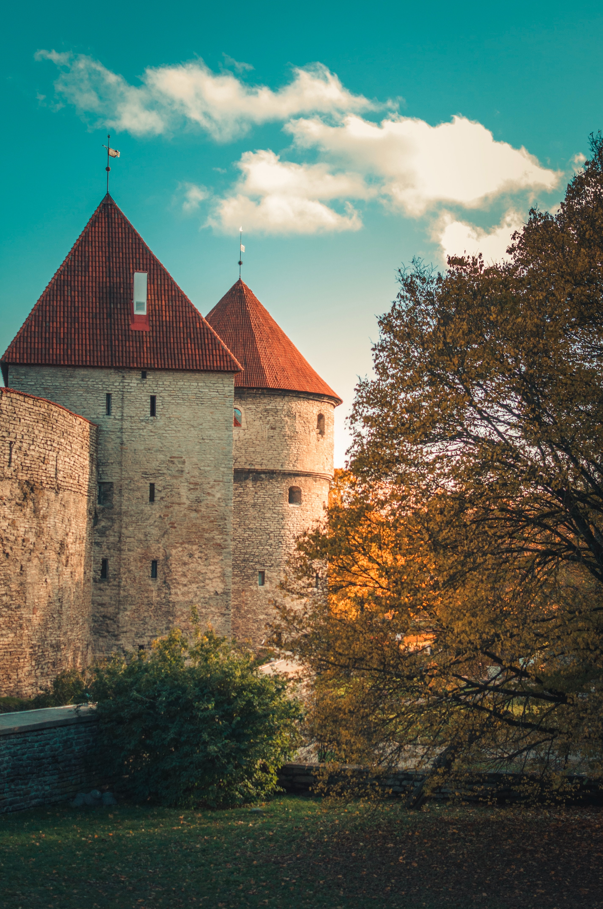

Mammas family
Nagoya, Japan

With 2.3 million people, Nagoya is the 4th largest city in Japan. Mainly known as an industrial city, it is the birthplace of Toyota.
San Diego, USA
With 1.3 million people, San Diego is the 2nd largest city in California. It is best known for its ideal climate and beautiful beaches.
Pappas family
Sillamäe, Estonia
With 13,500 people, Sillamäe is located on the northeastern coast of Estonia. It is a former oil shale mining town.
Berlin, Germany

With 3.7 million people, Berlin is the capital and largest city in Germany. Known for its striking contrasts of historical and modern architecture.